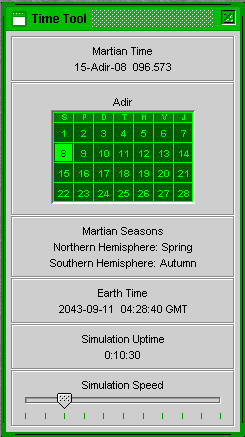

Mars Simulation Project
|
|  |
| Time Tool |
The Time Tool displays the current time in the simulation.
The top-most panel shows the current Martian time. It is in the following format: Orbit-Month-Sol Millisol.
The second panel shows the month and the sol of the month in a calendar format. The one letter abbreviation for the weeksols are also given.
The third panel shows the current season in the northern and southern hemispheres.
The fourth panel shows the current Earth time in GMT.
The fifth panel shows the amount of time the simulation has been running in true Earth time.
The sixth panel has a slider bar that allows the user to change the time compression ratio of the simulation.
The Martian calendar used in this simulation is based on Shaun Moss's "Areosynchronous Calendar".
http://pweb.jps.net/~gangale3/moss/Virtual_Mars/Calendar.asp
The Areosynchronous Calendar is heavily derived from Tom Gangale's Darian Calendar.
http://pweb.jps.net/!tgangale/mars/mst/darifrm.htm
The Martian year is referred to as an "orbit". It is 668.5921 Martian days ("Sols") long. In the calendar, about half of the orbits are 668 Sols long, and the other half are "leap-orbits" with 669 Sols. See the Areosynchronous Calendar for complete details on leap-orbits.
The orbit has 24 months with either 27 or 28 Sols:
| Month Name | Number of Sols | |
|---|---|---|
| Adir | 28 | |
| Bora | 28 | |
| Coan | 28 | |
| Deti | 28 | |
| Edal | 28 | |
| Flo | 27 | |
| Geor | 28 | |
| Heliba | 28 | |
| Idanon | 28 | |
| Jowani | 28 | |
| Kireal | 28 | |
| Larno | 27 | |
| Medior | 28 | |
| Neturima | 28 | |
| Ozulikan | 28 | |
| Pasurabi | 28 | |
| Rudiakel | 28 | |
| Safundo | 27 | |
| Tiunor | 28 | |
| Ulasja | 28 | |
| Vadeun | 28 | |
| Wakumi | 28 | |
| Xetual | 28 | |
| Zungo | 27 or 28 if a leap-orbit |
The month names are based on Frans Blok's "The Rotterdam System".
http://www.geocities.com/fra_nl/rotmonth.html
There are seven sols in a Martian week with the following week names:
Every Martian month has 4 weeks. On months with 27 Sols, the last week only has six Sols and Jovisol is clipped. This allows the first Sol of every month and every orbit to be Heliosol.
The calendar uses metric time for Mars with the Sol broken up into the following common units:
decasol = 1/10 Sol = 2.46 Earth hours
centisol = 1/100 Sol = 14.8 Earth minutes
millisol = 1/1000 Sol = 1.48 Earth minutes
Martian time of the Sol is usually written in three-digit millisol format to three decimal points. ex. from "000.000" to "999.999".
The common timstamp format for Mars date/time is orbit-month-sol:millisols. ex. "17-Adir-03:523.234"
The time of the day is based on Bruce Mackenzie's "Metric Time for Mars".
http://pweb.jps.net/~tgangale/mars/other/mcknzfrm.htm
Please send questions or comments to mars-sim-users@lists.sourceforge.net
Mars Simulation Project copyright © Scott Davis, 2008
Map data courtesy of NASA Jet Propulsion Laboratory